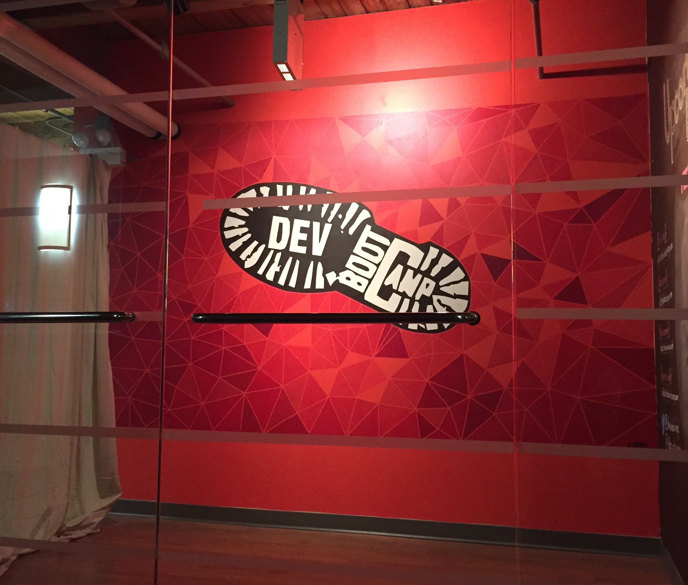

My Phase 1 at DBC
By Shreya Patel
10/05/2014
3 weeks ago, I walked through the doors of Dev Bootcamp and high-fived my way through a tunnel of cheering people. Boy was I confused and slightly overwhelmed. But all that went away fairly quickly as we broke the ice through introductions.
Dev Bootcamp is a 19 week immersive program where I decided to go to become a developer. My first three weeks onsite were quite the roller coaster. Getting accustomed to the fast pace and non-traditional learning environment was no joke. At times I questioned if I was in the right place. The curriculum is tough, but for good reason. A blend of hands-on problem solving, challenges, interactive lectures, group projects, and emphasis on engineering empathy makes this place unique and drives success.
A typical week in Phase 1 at Dev Bootcamp consists of 2 yoga classes, an engineering empathy session, a group project day, several interactive lectures, and throughout the week 40 plus challenges or on average for me of 50 to 60 hours of coding. We focused on writing algorithms, Object Oriented Programming in Ruby, and building databases through SQLite 3 and ActiveRecord. We made basic to elaborate command line programs, two of which included a Sudoku solver and a Flashcards game. All in all, Phase 1 was mentally exhausting and rewarding. The emotions felt varied almost everyday.
A typical week in Phase 1 at Dev Bootcamp consists of 2 yoga classes, an engineering empathy session, a group project day, several interactive lectures, and throughout the week 40 plus challenges or on average for me of 50 to 60 hours of coding. We focused on building alogrithms, Object Oriented Progamming in Ruby, and databases including SQLite3 and ActiveRecord. This was mentally exhausting and rewarding. The emotions felt varied almost everyday.
frustrated, amused, comfortable, discouraged, confident, nervous, curious, determined, apprehensive, empathetic, optimistic, confused, peaceful, tired…
Despite the ups and downs, I am definitely glad to have come to Dev Bootcamp to pursue a career in programming. On our last day of Phase 1, we got to sit in on demo day for the Phase 3 graduates. It was beyond amazing to see the applications and programs made by them in just 8 short days. My mind was blown at the realization that just 6 weeks ago, they were where I am now.